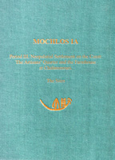

Jeffrey S. Soles
Mochlos IA : Period III. Neopalatial Settlement on the Coast: The Artisan's Quarter and the Farmhouse at Chalinomauri
INSTAP Academic Press: Philadelphia, 2003
 |
The island of Mochlos and the adjacent plain that lies on the coast of Crete opposite it are located in a graben (tectonic valley) flanked by horsts (mountain blocks) on the east and west. As a result of normal faulting, the island and plain have experienced considerable subsidence with respect to the areas on either side. In the Bronze Age, the two were still connected by a narrow isthmus of land, now submerged below sea level, that provided excellent shelter for passing ships as well as a bridge for land traffic from the island to the adjacent coast. The plain runs along the coast, mostly to the east of Mochlos, for a distance of ca. 4.5 km (Fig. 1). Nowhere more than 1 km wide, it is isolated from the interior of Crete by the Ornos Mountains, which ring the plain on the east, west, and south, and rise abruptly to a maximum height of 1237 m above sea level. The plain's geology consists of a coalescing apron (20-30 m deep along the coast) of fluvial deposits formed in the Pleistocene by torrential deposits of muds, sands, pebbles, gravels, boulders, and other materials eroded from the surrounding mountains.' In the Pleistocene, when sea level was much lower, these deposits extended considerably beyond the present coastline. Erosion of these deposits, caused primarily by the rise in sea level that accompanied deglaciation, has resulted in the present coastal configuration of steep vertical bluffs interrupted by narrow ravines in which modern streams flow toward the sea. Eight of these ravines cut through the plain to the coast, two on either side of the headland where the modern village of Mochlos lies, directly opposite the island, and six farther to the east. Only one ravine continues to be fed by a freshwater stream that runs year round, the easternmost ravine that lies at the eastern end of the coastal plain below the site of Chalinomouri; the other stream beds are dry throughout most of the year. Today, the area is intensively farmed. Terraces of olive trees are planted on the mountain slopes; vineyards and wheat are grown on the terraces along the coast; and rich gardens with bananas, pomegranates, and other fruit trees are located in the ravines. Until recently, most of the inhabitants in the area lived in the villages of Lastro, Sphaka, Tourloti, and Myrsini along the main highway in the mountains above the coast. |
| Back to Publications | Table of Contents |